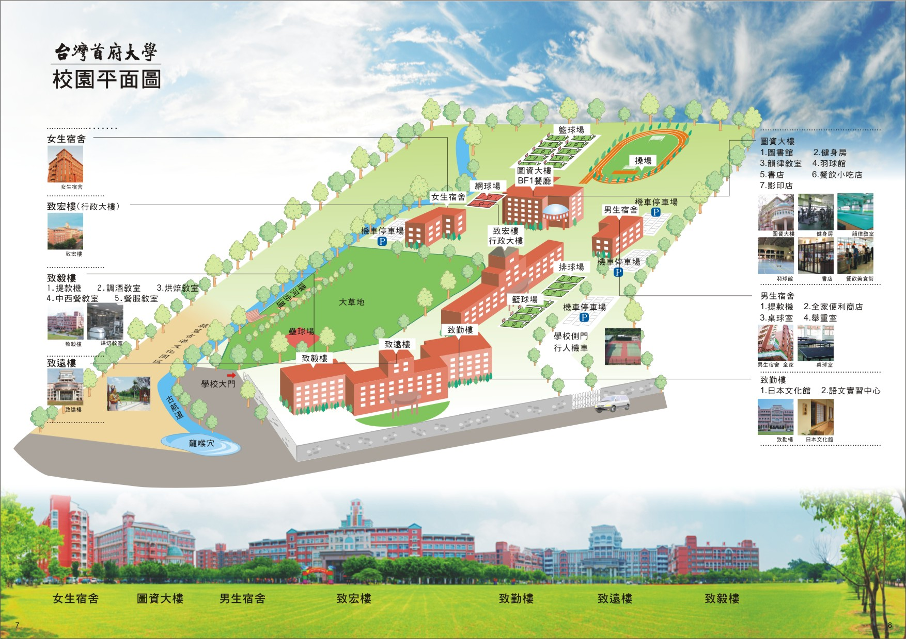

| 壹、本所沿革 | |||||||||||||||
| 本所創立於 2000 年，由於創辦人、董事長以及學校行政人員皆擁有豐富的教育行政實務與學術背景，故本所 為學校重點發展之研究所。本所亦不斷地增聘著名之學者至本所任教，同 時在專業中英文書籍以及軟硬體設施，均為全校之最；在學生方面，大多為在職生，且以政府教育行政人員、 國中小學校長或主任等為主，對本所理論與實務之結合有教學相長之效。 | |||||||||||||||
| 貳、宗旨 |  |
||||||||||||||
| 人才培育、教育領航 | |||||||||||||||
| 參、教學目標 | |||||||||||||||
| 培育具有教育專業研究能力之行政決策與課程教學人才 | |||||||||||||||
| 肆、發展特色 | |||||||||||||||
| 1.兼重教育理論與實務研究，積極培養教育學術及行政研究人才。 | |||||||||||||||
| 2.提供教育人員在職進修機會，提升教育專業水準，強化行動研究。 | |||||||||||||||
| 3.因應資訊社會的需求，加強學校管理與教學創新人才的培育。 | |||||||||||||||
| 4.配合區域性需求與特色，結合學術與社區，倡導教育學術本土化。 | |||||||||||||||
| 5.結合學校休閒發展產業培育休閒師資，符合本校教育目標。 | |||||||||||||||
| 6.加強國際學術合作，拓展師生國際視野與學術交流。 | |||||||||||||||
| 伍、優異表現 | |||||||||||||||
| 1.諸多畢業所友榮任教育行政主管、學校校長、主任等職務。 | |||||||||||||||
| 2.畢業所友之行政決策與課程教學領導表現優異。 | |||||||||||||||
| 3.師資陣容堅強，學術研究專精。 | |||||||||||||||
| 4.課程多樣、專業教學、專長授課。 | |||||||||||||||
| 5.學生論文研究多元、學術研究品質精進。 | |||||||||||||||
| 陸、行事曆 | |||||||||||||||
|
|||||||||||||||
| 柒、影片介紹 點圖連結 | |||||||||||||||
 |
|||||||||||||||